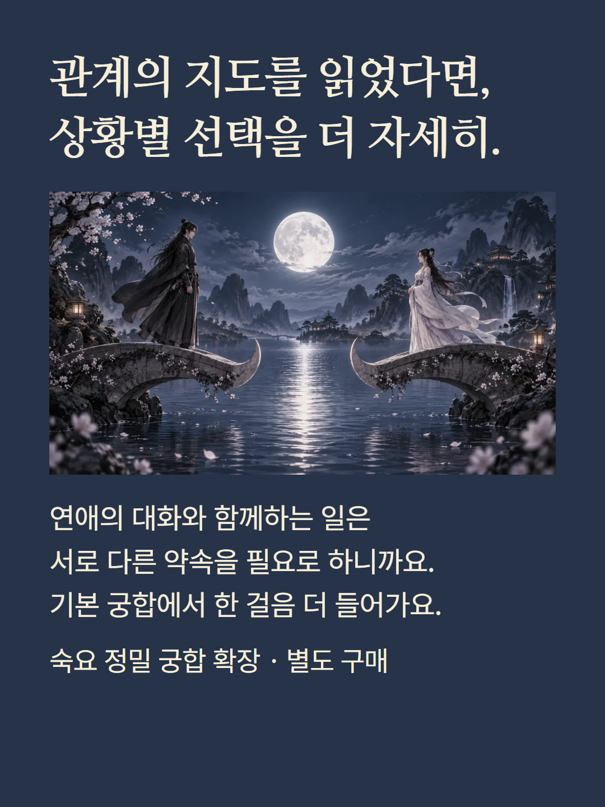
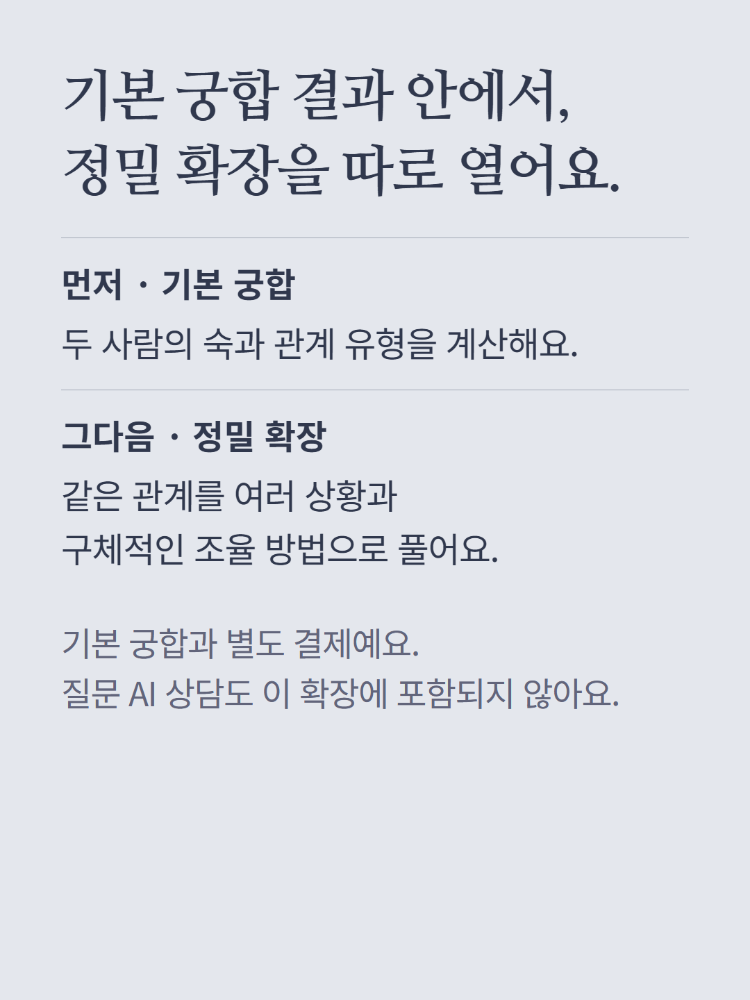
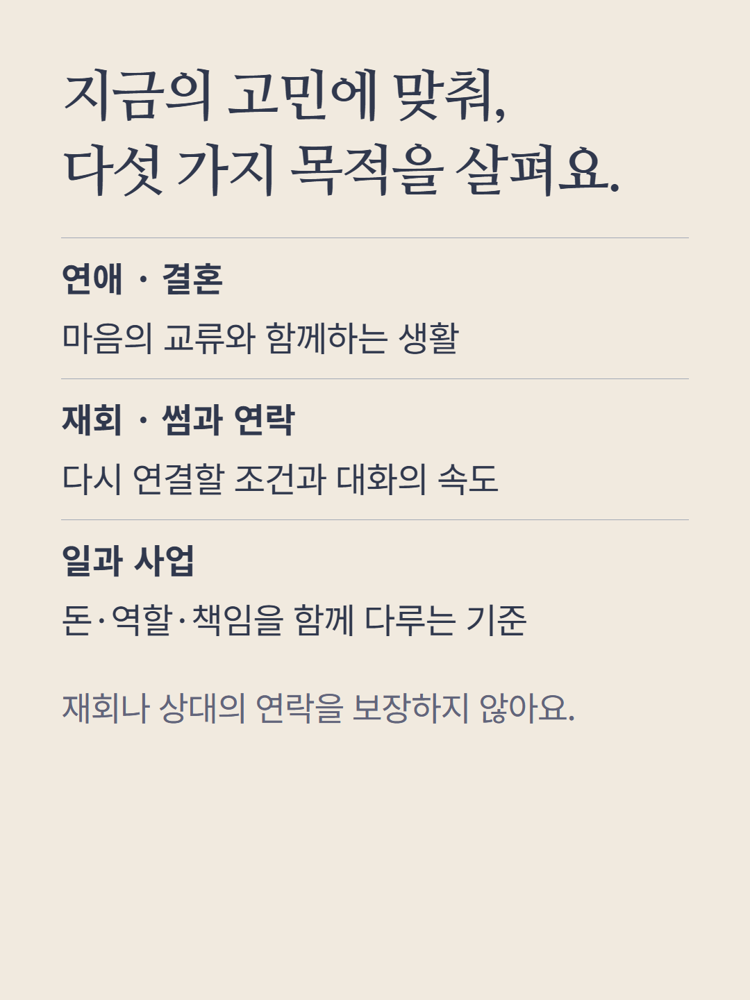
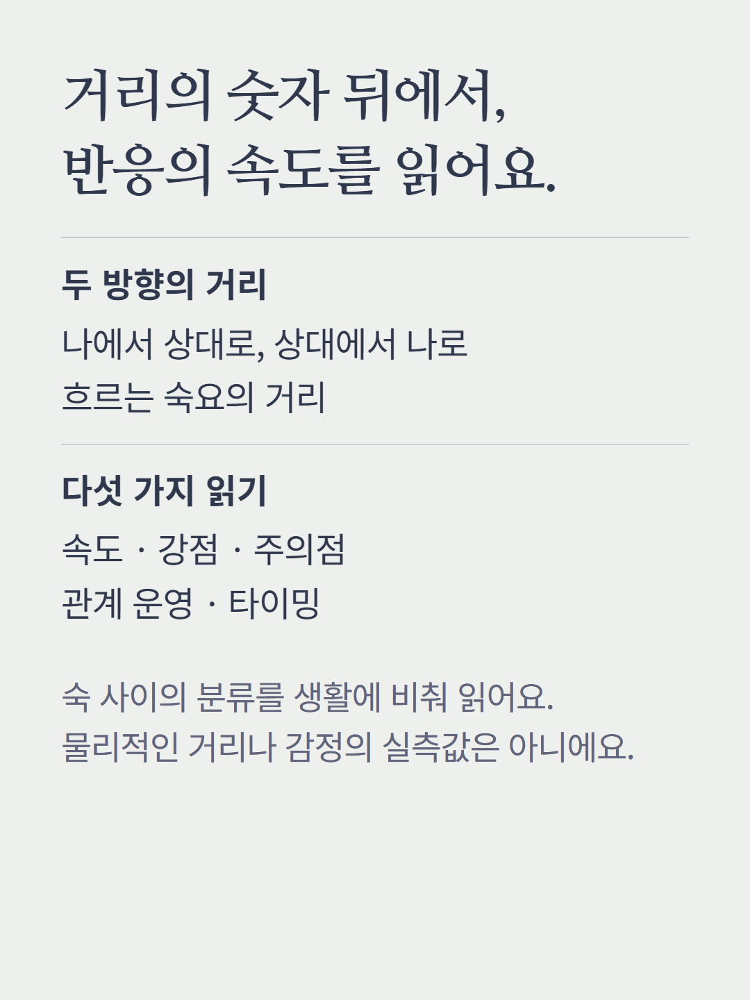
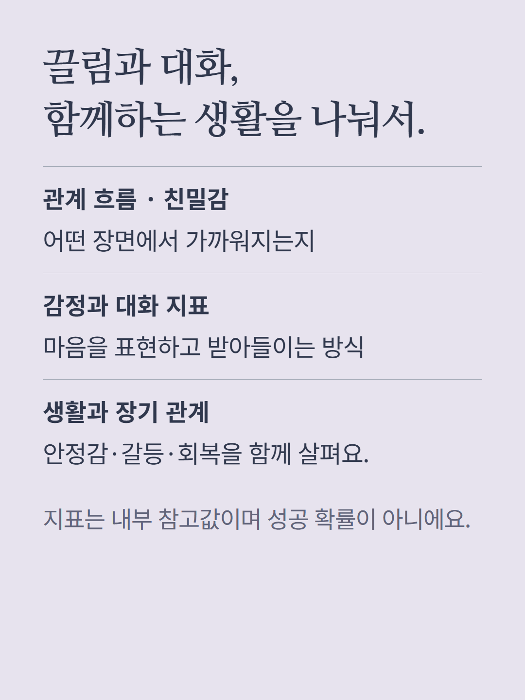
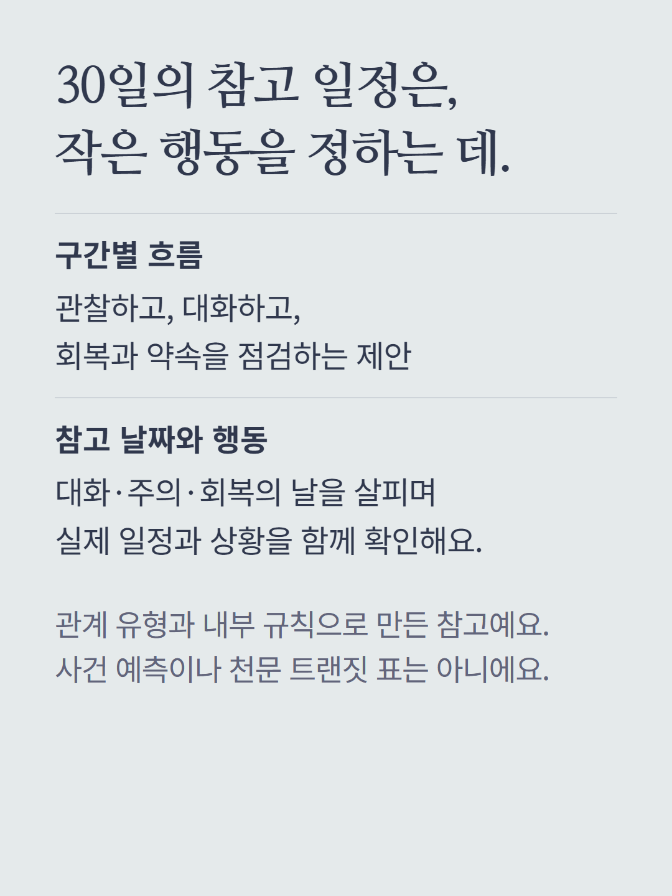
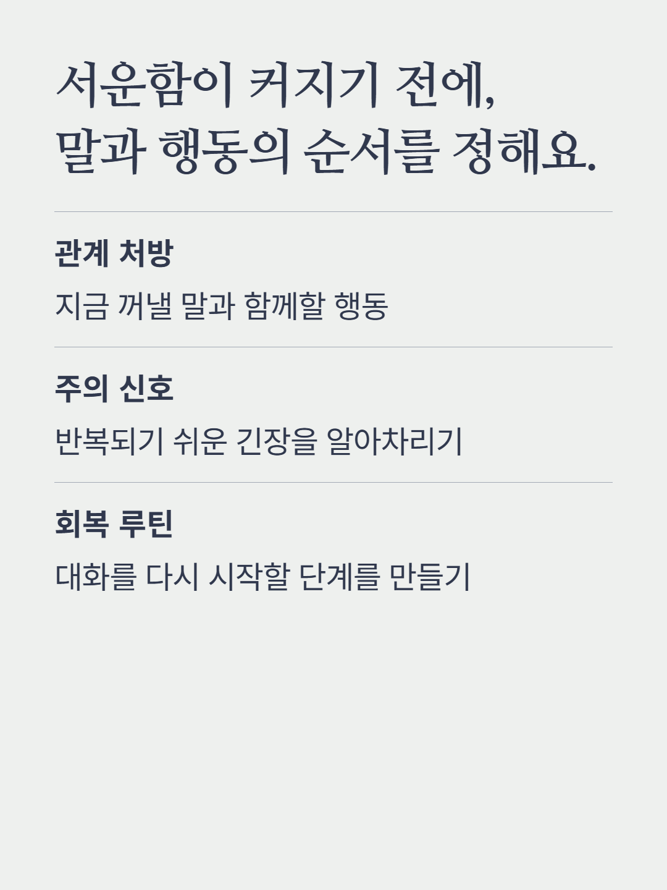
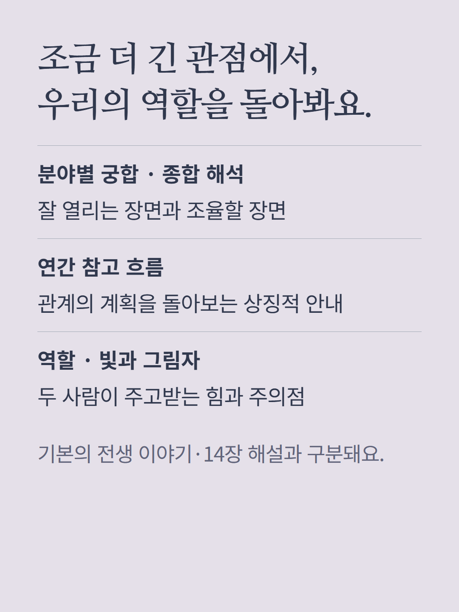
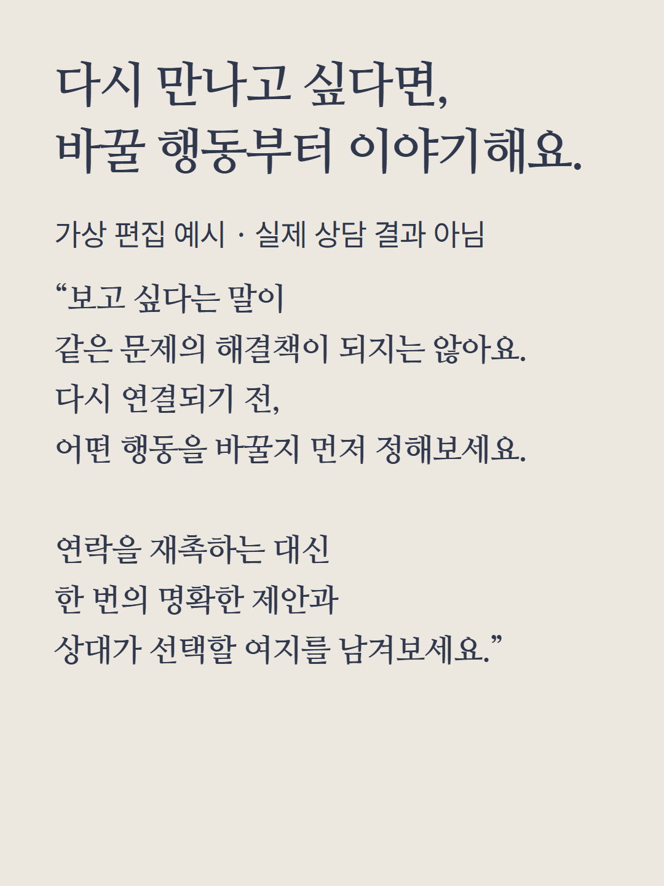
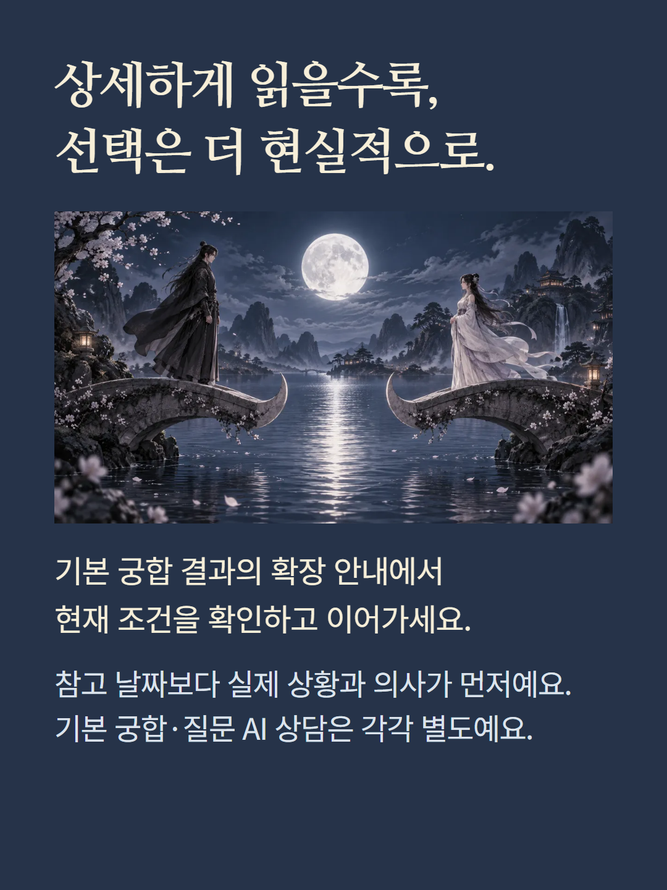

기본 숙요 궁합 결과 안에서 별도로 여는 정밀 확장입니다. 같은 두 사람의 관계 계산을 바탕으로 목적별 궁합, 거리감, 관계 흐름과 친밀감·감정 지표, 30일 참고 일정, 관계 처방·주의 신호·회복 루틴, 분야별 관계와 종합 해석, 연간 참고 흐름·역할·빛과 그림자를 더 읽습니다. 연애·결혼·재회·썸과 연락·일과 사업의 다섯 목적을 살펴봅니다. 30일 날짜와 연간 흐름은 관계 유형과 내부 규칙을 활용한 상징적 참고이며 실제 사건 예측이나 천문 트랜짓 계산표가 아닙니다. 점수는 관계 성공 확률이 아닙니다. 기본 궁합 구매와 궁합 질문 AI 상담은 각각 별도이고, 전생 서사와 관계 해설 14장은 기본 궁합에 포함되는 영역입니다. 예시는 가상 편집이며 현재 화면의 결제 조건을 따릅니다.